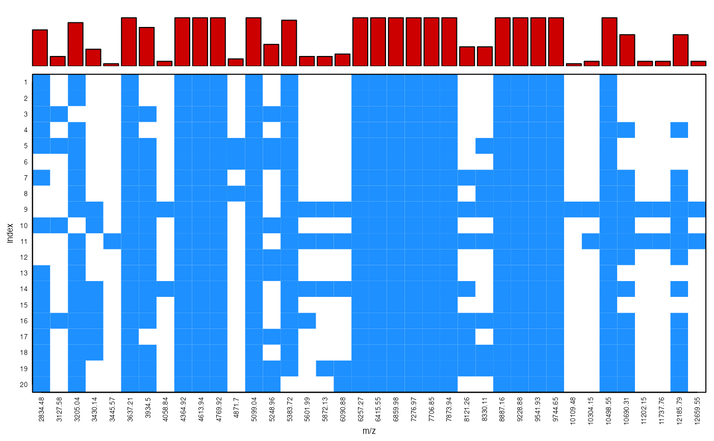

peakPatterns.RdThis function displays the patterns of peak presence and absence in an intensity matrix as generated from intensityMatrix.
A matrix, data.frame or a list of MassPeaks objects.
Unique label used to denote peak absence in x (NA, default).
Logical value indicating whether a barplot of relative peak frequency across samples is displayed (TRUE, default).
Vector of axis labels in the c("x", "y") format.
Colour of the bars in the barplot.
Vector of colours for the table cells (format c("col.absence","col.presence")).
Logical value indicating whether gridlines are added (FALSE, default).
Colour of the gridlines ("black", default).
Style of the gridlines ("dotted", default. See lty in par).
Axis tick labels scaling factor relative to default.
Axis labels scaling factor relative to default.
Other arguments.
The peak presence/absence patterns are displayed by rows from the first (top) to the last (bottom) sample in the data set x over the range of common m/z points. Positive peaks are by default represented by coloured cells whereas zero or absent peaks are left blank. A barplot on the top margins shows the relative frequency of a peak at each m/z point across samples.
No return value, graphical output.
See intensityMatrix.
# Load example data
data(spectra) # list of MassSpectra class objects
data(type) # metadata
# Some pre-processing
sc.results <- screenSpectra(spectra,meta=type)
spectra <- sc.results$fspectra # filtered mass spectra
type <- sc.results$fmeta # filtered metadata
spectra <- transformIntensity(spectra, method = "sqrt")
spectra <- wavSmoothing(spectra)
spectra <- removeBaseline(spectra)
peaks <- detectPeaks(spectra)
peaks <- alignPeaks(peaks, minFreq = 0.8)
# Display patterns across all data
peakPatterns(peaks)
# Check results within isolate 280
peakPatterns(peaks[type$Isolate=="280"])
